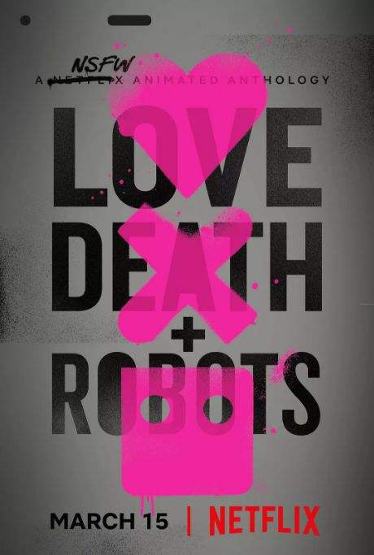
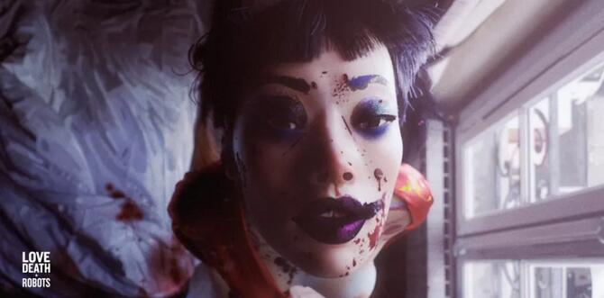
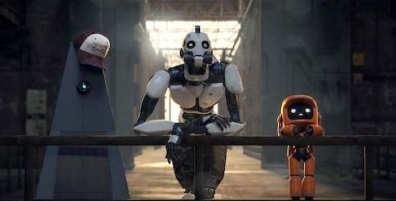
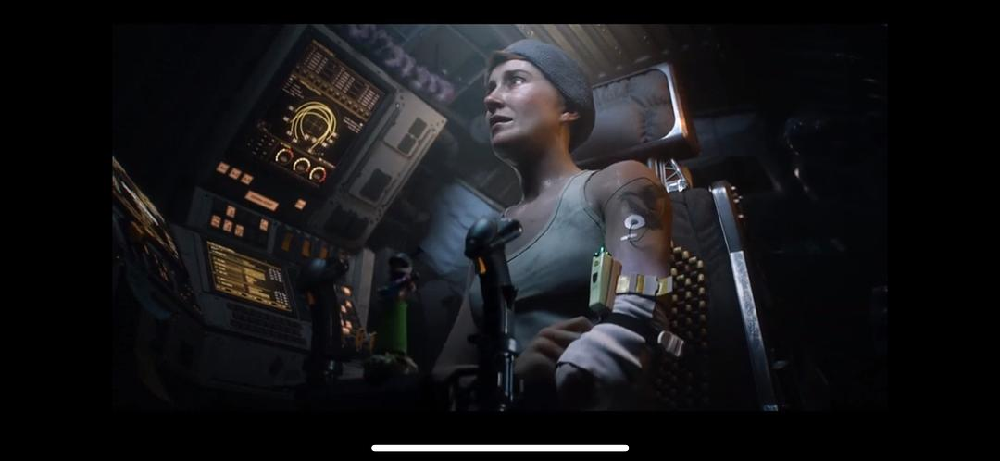

|  |
《爱，死亡和机器人》(Love,Death&Robots)《爱，死亡和机器人》（Love,Death&Robots）是由NetFlix出品，提姆·米勒和大卫·芬奇执行监制的成人向动画短片集， 于2019年3月15日在美国首播 。2019年6月，该剧宣布将续订第二季，提姆·米勒和大卫·芬奇继续担任该剧第二季的 执行制片人，导演吕寅荣也会加入主创团队，成为第二季的监察导演之一 。该部动画短片由18部分组成，每部分时长5-15分钟。 短片涵盖多种类型，包括科幻、奇幻、恐怖和喜剧，短片也包含多种形式，包括传统2D和3DCGI短片。 |
1.桑尼的优势 Dave Wilson
2.三个机器人 Víctor Maldonado&Alfredo Torres
3.证人 Alberto Mielgo
4.机动装甲 Franck Balson
5.噬魂者 Owen Sullivan
6.当酸奶统治世界 Victor Maldonado & Alfredo Torres
7.裂缝以外 Leon Berlue,Dominique Boidin,Remi Kozyra,Maxime Luere
8.祝有好的收获 Oliver Thomas
9.垃圾场 Javier Recio Gracia
10.变形者 Gabriele Pennacchioli
11.帮手 Jon Yeo
12.古鱼复苏 Damian Nenow
13.新运十三 Jerome Chen
14.齐马的作品 Robert Valley
15.盲点 Vitality Shushko
16.冰河时代 Tim Miller
17.不一样的历史 Victor Maldonado & Alfredo Torres
18.秘密战争 Istvan Zorkoczy
短片主要内容：
三台机器人在城市废墟中穿行，从它们对遗物的互动可以看出它们从未见过人类， 无法对人类文化正确理解，常识都已消亡。人类因为欲望将自身灭绝，但同样因欲望而被改造， 甚至会说话的猫却大量活了下来。大量猫咪需要被爱抚，而机器人认为一但停止抚摸猫就会爆炸。 这个古怪的关系将成为人类文明的绝响
|  | ||
|  |  | |
Copyright-© 2020-2021 Binger